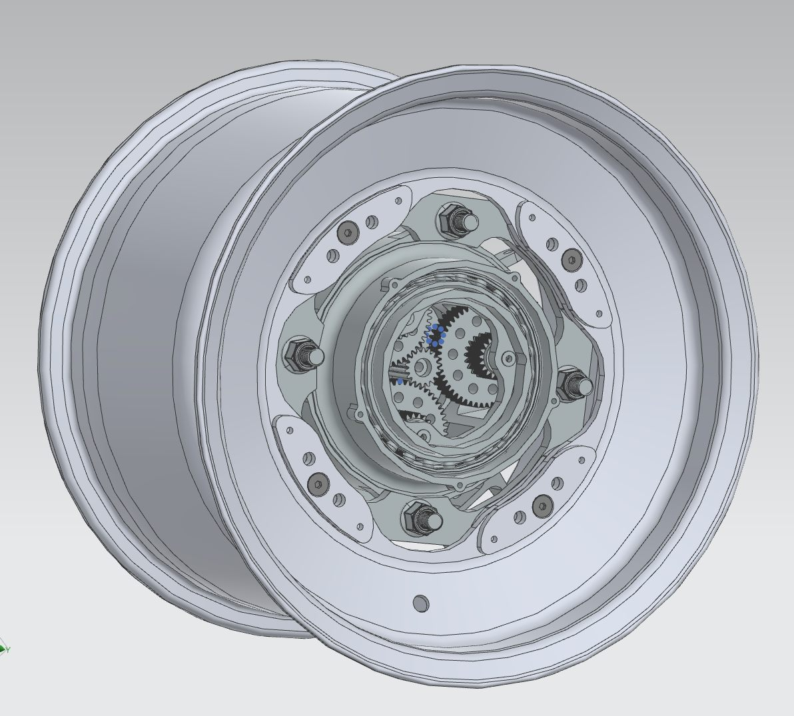
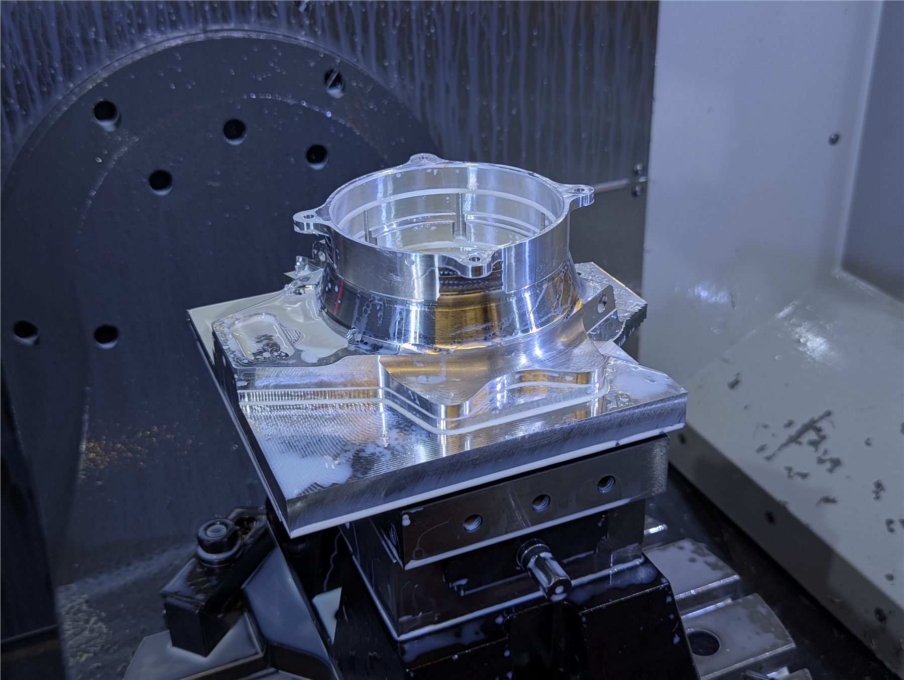
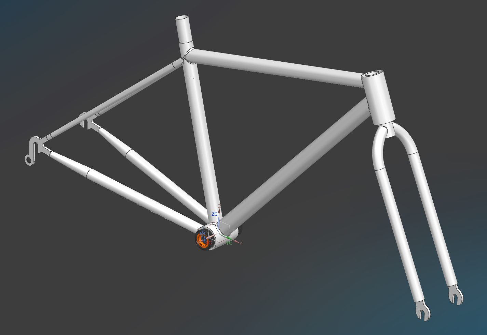
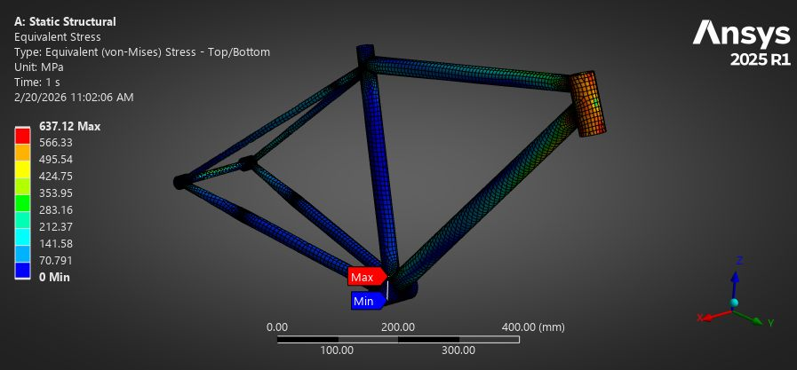
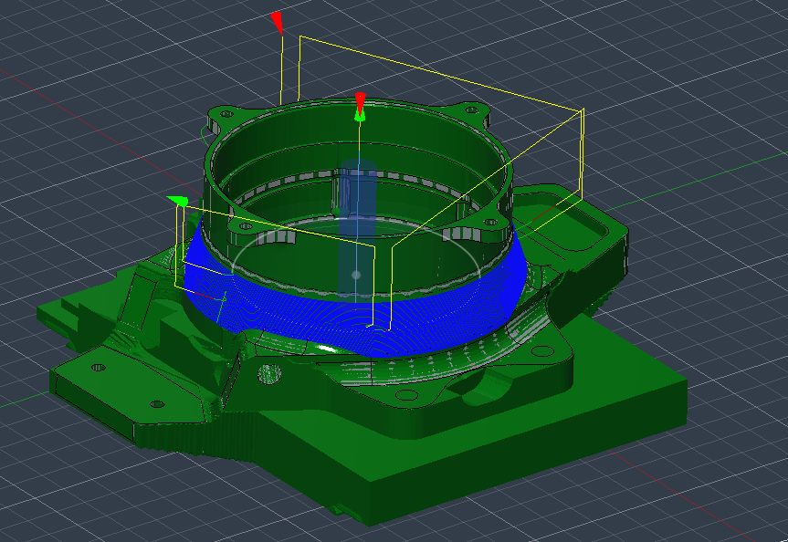
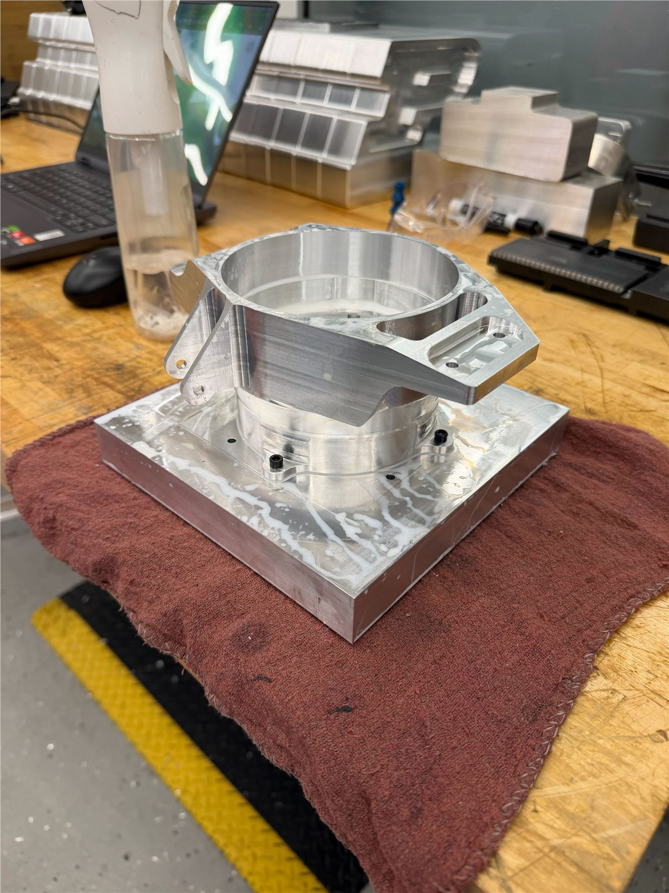
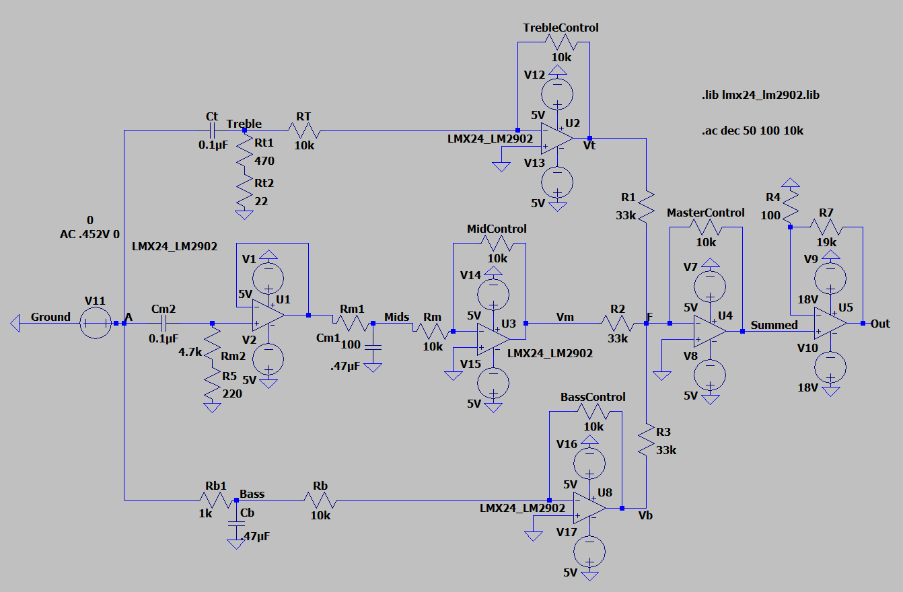
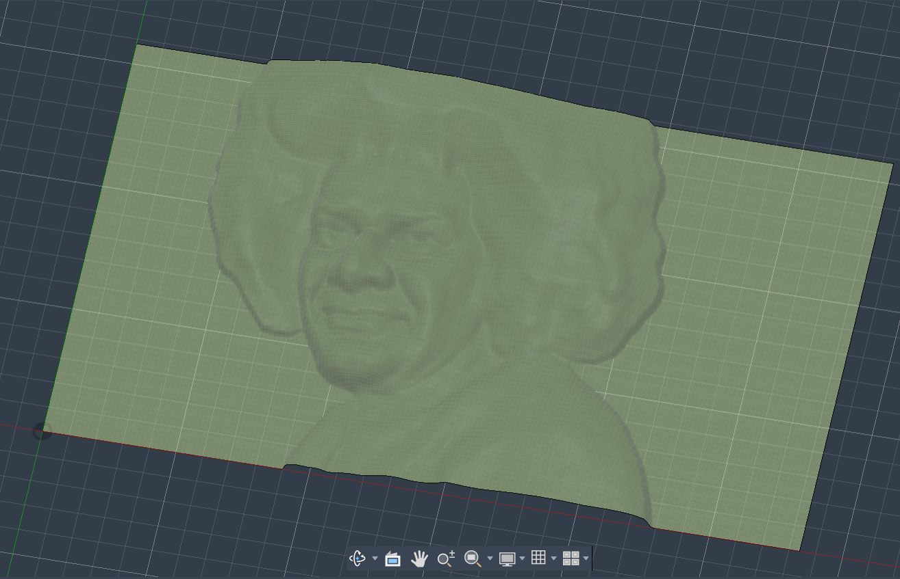
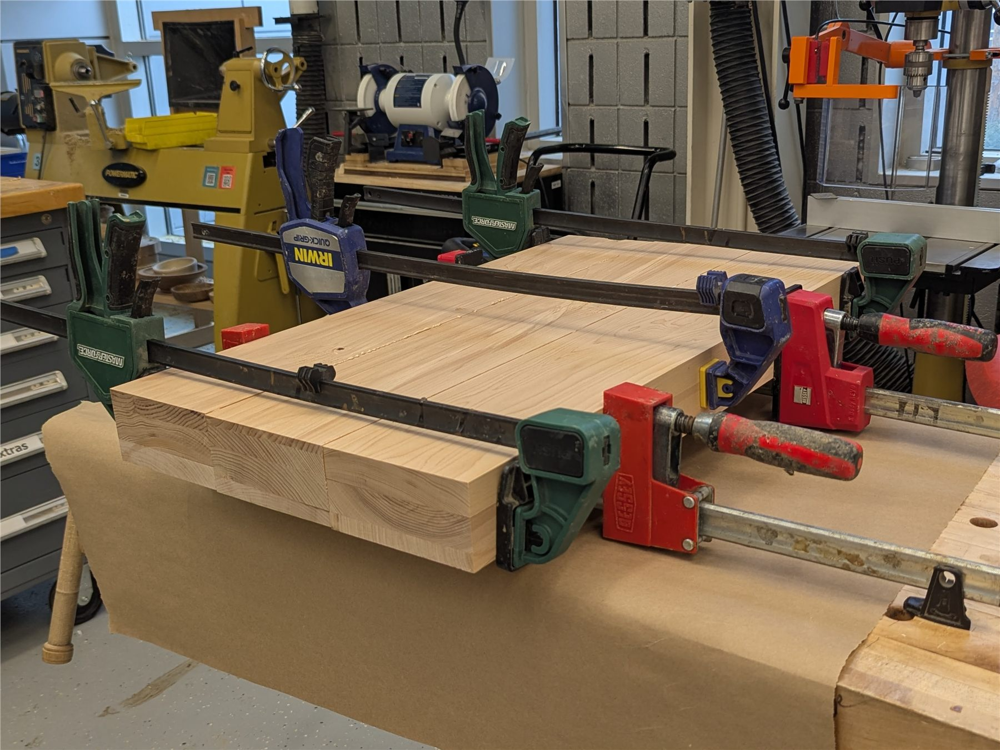

630-888-0715 · sathyadevarajan07@gmail.com · linkedin.com/in/sathya-devarajan
U.S. CITIZEN · WEST LAFAYETTE, IN
SATHYA DEVARAJAN
Purdue University — John Martinson Honors College · B.S. Mechanical Engineering · GPA 3.8 · Expected May 2028
Tooling Design Engineer Intern — Lockheed Martin Sikorsky
Scroll








5-AXIS CNC50% reduction in machining time vs. prior 3-axis process
GD&TBearing & seal bores toleranced for manual boring accuracy
SF 2.0 MIN.Static load cases validated in Ansys FEA
X 0000 · Y 0000
3.8
GPA · Honors College
0
Tooling Solutions Designed
0%
Faster 5-Axis Machining
2.0
Min. Safety Factor (FEA)
SIEMENS NXCATIAFUSION 360CREOANSYS FEAGD&T5-AXIS CNCDIVE CFDPYTHONMATLABKICADLTSPICE
Experience
Tooling Design Engineer Intern
Lockheed Martin Sikorsky — Stratford, CT
- Designed and revised 14 production tooling solutions for CH-53K, Black Hawk, and search-and-rescue rotorcraft components, tailoring designs and tolerancing to each part's production method — 3-/5-axis CNC, manual machining, or additive manufacturing; 3 designs have since been produced and put into use.
- Created bills of materials (BOMs) and managed tooling designs through PLM software throughout the design and revision process.
- Modified 2 of the 14 tool designs to correct functional issues and reduce manufacturing lead times.
- Co-designed a hybrid-propulsion system for a VTOL aircraft in a cross-functional intern competition, integrating engine, motor, battery, and gearbox subsystems within weight and thermal limits.
- Presented final design work to engineering leadership and program organizers.
14
Tooling solutions designed & revised
3
Designs in production use
2
Reworked for functional fixes
4
Production methods spanned — 3/5-axis, manual, additive
Drivetrain Engineer
Purdue Electric Racing (FSAE Electric) — West Lafayette, IN
- Designed the rear upright and planet carrier for a new outrunner drivetrain architecture in Siemens NX.
- Drafted detailed technical drawings of rear uprights in Siemens NX for internal bearing and seal bores, ensuring precise tolerancing to improve the accuracy of manual boring operations.
- Optimized wheel upright manufacturing by modeling toolpaths for 5-axis CNC milling, reducing machining time by 50% compared to previous 3-axis operations while maintaining strict geometric tolerances per GD&T standards.
- Developed and fabricated an upright fixture plate for 3-axis CNC operation.
- Performed static structural FEA on the rear upright and hub assembly to validate the design under load.
50%
Faster 5-axis machining time
1
Unibody upright + planet carrier designed
GD&T
Toleranced bearing & seal bores
CUSTOM
3-axis fixture plate fabricated
2027 DrivetrainRear Upright & Planet Carrier — Design & FEA
Rear upright — interactive 3D model (drag to rotate)
Full rear drivetrain assembly — interactive 3D model
Static FEA — rear upright / hub assembly
2026 DrivetrainWheel Upright Manufacturing — Prior Upright Design
5-axis CNC toolpathing and machining shown below were performed on the previous (2026) upright design, ahead of the 2027 redesign shown above.
5-Axis Roughing
5-Axis FinishingAfter 5-Axis Op

After Final 3-Axis OpProjects
01
Custom Electric Bike Design
October 2025 — Present
- Parametric frame model in Siemens NX, enabling rapid modification of critical dimensions such as wheelbase and steerer angle to accelerate design iteration.
- Structural integrity validated via Ansys FEA, iterating frame dimensions to minimize mass while maintaining a minimum safety factor of 2.0 under static load cases.
Siemens NX · Ansys FEA
Top-level frame assembly — interactive 3D model (drag to rotate)

02
Analog Audio Equalizer
April 2026
- Designed schematic for an audio equalizer and amplifier to recombine adjusted treble, mid, and bass frequencies for customizable output.
- Troubleshot and validated breadboard circuit assembly via frequency generator, oscilloscope, and multimeter.
LTSpice · KiCad

03
Complex Surface Topography
December 2025 — January 2026
- Built 3D mesh geometry from 2D heightmaps in Fusion 360 to model complex organic topology while ensuring manufacturability.
- Accelerated CAM toolpaths, cutting machining time by 60% while retaining high-level detail without manual post-processing.
Fusion 360 · CAM · CNC Router
Relief surface — interactive 3D model (drag to rotate)
01
Source Image
02
Grayscale Heightmap

03
3D Mesh Conversion

04
CAM Toolpaths

05
Stock Preparation
06
CNC Router Operation
07
Final Piece
01
Machining Pass — Video 1
02
Machining Pass — Video 2
03
Machining Pass — Video 3
04
Smog Tower Simulation
March 2025
- Developed a Python simulation and conducted a financial study on the costs and benefits of smog tower air filtration systems.
Python
Skills
CAD/CAM/Metrology
- CATIA
- Siemens NX
- Fusion 360
- DS 3DExperience CAD & PLM
- Siemens Teamcenter
- GD&T
Analysis
- Ansys FEA
- Dive CFD
Manufacturing
- 5-Axis CNC
- 3-Axis CNC
- Manual Machining
- Soldering
Controls / Electronics
- Python
- MATLAB
- Arduino
- LTSpice
- KiCad
Contact